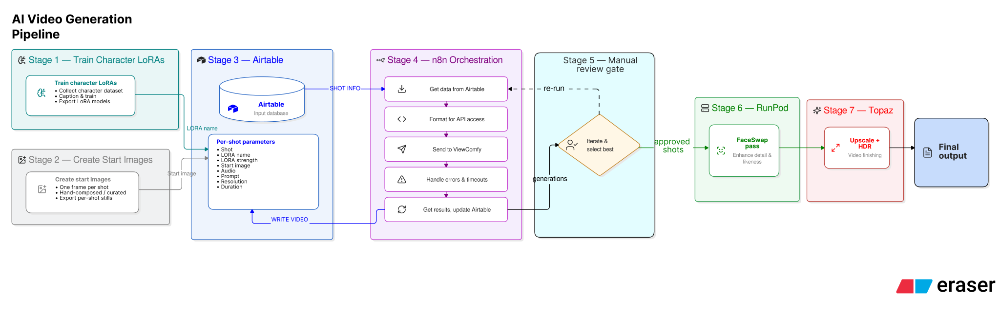
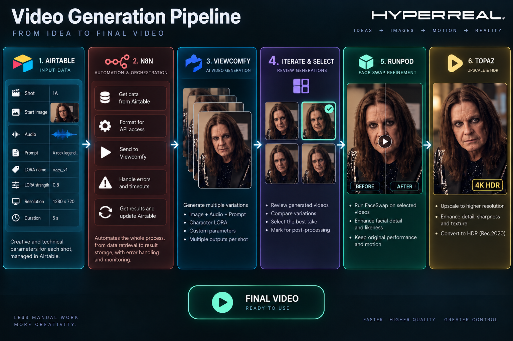

Two video sequences were proposed for the Ozzy documentary — an intro and an outro, both showing an older Ozzy after his death, commenting on the contents of the film. Getting there meant discarding two generation approaches before landing on the one that worked, and adding a second refinement pass on top of it. This post-mortem records the approaches tried, the issues that survived into delivery, and the stack that produced the final shots.
Ozzy Interactive Avatar
Ozzy Video Sequences
Two different sequences were proposed for inclusion in the Ozzy documentary: one intro and one outro. Both showed an old Ozzy after his death, commenting on the contents of the documentary.
Intro
In the intro, Ozzy reflected on the concert — how it was proposed and staged close to the house he grew up in. The first version ran very long and was cut down to just under a minute.
Outro
In the outro, Ozzy commented on the concert, joked about it, and said goodbye from the afterlife. Again, it was cut from a starting duration of several minutes down to two phrases.
Production
Several approaches were made before one was accepted.
1. Video to video
Using a video reference to drive a first frame.
- LTX IC-LoRA Control didn't give very good results. Motion was acceptable for simple movements, but it wouldn't do lipsync, which had to be added afterwards. Discarded.
- WAN models didn't reach the level of detail or the frame rate the project needed.
2. Image + audio with prompted acting
LTX Image+Audio — this was the version used. Acting was prompted and kept very simple on all shots, though it still needed many iterations to get good results. The model's strengths were its ability to deliver acting and facial expressions on top of excellent lipsync. Body motion was handled by the prompt; likeness was handled by a character LoRA trained on Ozzy's exact likeness at the time of the concert.
- Lack of control over acting.
- Couldn't stop him from grabbing a pen on the table — it had to be removed from the source image.
- Hand tattoos were challenging. Ozzy wore several highly detailed rings that could not be made consistent with the current setup.
- Acting varied between takes: sometimes too much smiling, sometimes weird expressions or head motions.
3. Face swap workflow
A second refinement workflow was run on top of the generated videos. An LTX faceswap model using the character LoRA at higher resolution provided detail and likeness while keeping the motion, expressions, and acting intact.
Tech Stack
External Providers
| Provider | Role | Verdict |
|---|---|---|
| Wavespeed | Access to most available inference models. Mostly used for static frame generation with NanoBanana, also for testing new models. | Kept |
| ViewComfy | API access to custom workflows including character LoRAs and fine-tuned values. Connected to the Airtable database for batch processing via n8n. | Too dependent on unresponsive tech support |
| Airtable | Hosts the shot list and its versions. Used for prompt refinement, iterative generation, running shot variants, and evaluation. | Kept |
| n8n | Automation layer for complex end-to-end workflows. | Kept |
| RunPod | Hosting for dedicated ComfyUI workflows. | Best and most economic option so far |
| Griptape | Orchestration tool. | Recently adopted |
| RunComfy | Character LoRA training. Fast, reliable API access to LoRAs and workflows. | Under evaluation |
Software
- DaVinci Resolve Studio
- Adobe Photoshop
- Audacity
- Shutter Encoder
- Topaz Upscaler
Models
- NanoBanana — start image creation. Currently the best model for taking references, generating likeness, and prompt adherence. Used interactively.
- KREA — fast to train, used for dataset creation as an intermediate step. A LoRA trained on real images produced a fully synthetic, curated dataset of face angles, expressions, and phonemes. Better than NanoBanana for large datasets, since it can be trained and even run locally.
- LTX — the best model for realistic character creation. Character LoRAs trained on LTX have been excellent for likeness, even when trained on static material.
Pipeline
The same pipeline shown two ways. The SVG is vector — it stays sharp at any zoom, scales to the column width, and its text is selectable; it is also the larger file. The PNG is a fixed raster at 1536 × 1024 and will soften if enlarged past its native size.

